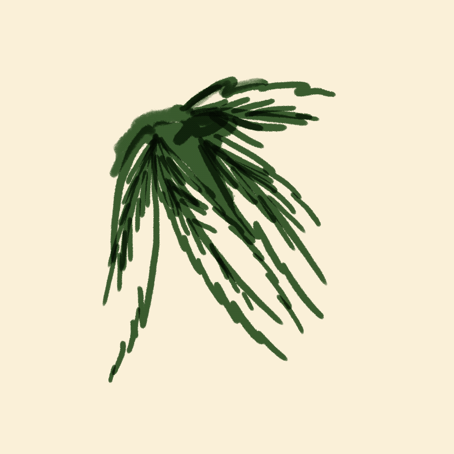
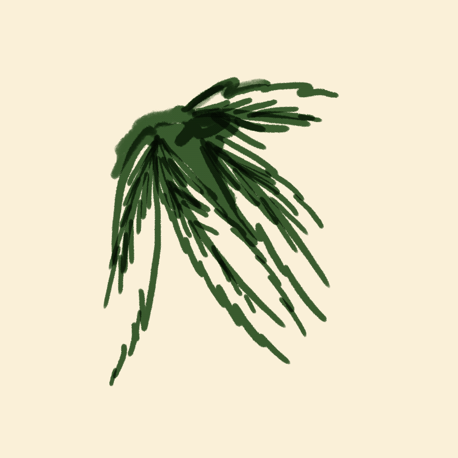

Corydalis, or Yu Jin, is a Chinese herb.
Pain is alleviated when the herb is dug
up, ground, and boiled with hot vinegar.
Chronic pain especially is reduced with
the use of Corydalis.
It contains dehydrocorybulbine (DHCB).
It doesn't generate any tolerance or
build up opioid morphine, more commonly
used in the West does.
Recommended Dosage: 4-12 grams daily.
Ginger is used in Ayurvedic processes
to reduce pain. Ginger treats joint discomfort
motion-sickness, and clears microcirculatory
channels to facilitate better nutrient
absorption and waste elimination.
Ginger contains salicylates. This gets
transformed into a chemical substance called
salicylic acid, which prevents your nerves from
making certain prostaglandins, thus easing pain
and discomfort.
Recommended Dosage: 3-4 grams
ginger daily.

Painkilling tabletslike Ibuprofen, Aleev,
and Tylenol are used most often for pain
alleviation. Opioids like morphine are
also used.
Recommended Dosage: according to type of
tablet.
 

Cannabis sativa, called iNtsango, is used in
the Eastern Cape Province of Africa to treat
headaches, labor pain, menstrual cramps, and
body aches. The roots are boiled and the
liquid is consumed to alleviate pain.
Cannabis supposedly activates the body's
rewards system and reduces pain levels.
However, no solid evidence of this
phenomenon exists yet.
Recommended Dosage: 1,500 milligrams daily.